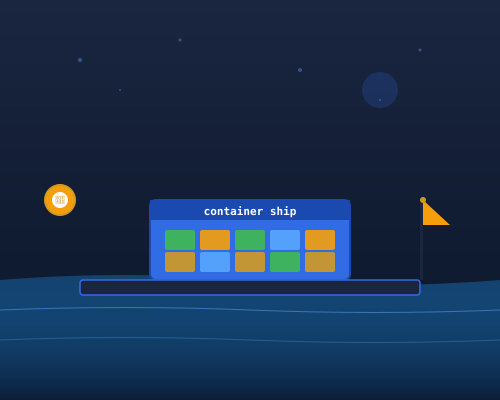
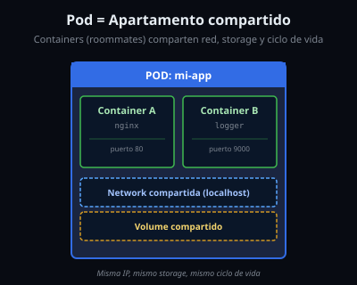
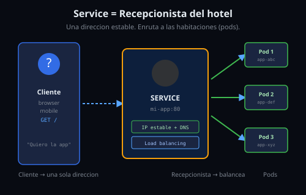
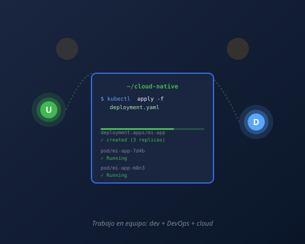
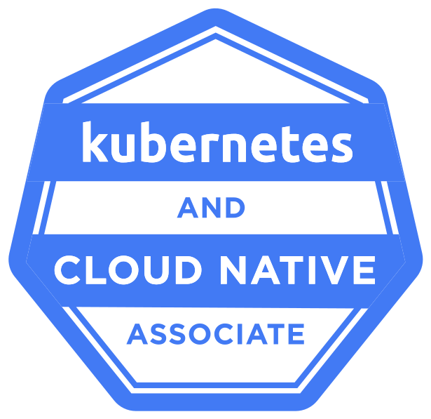
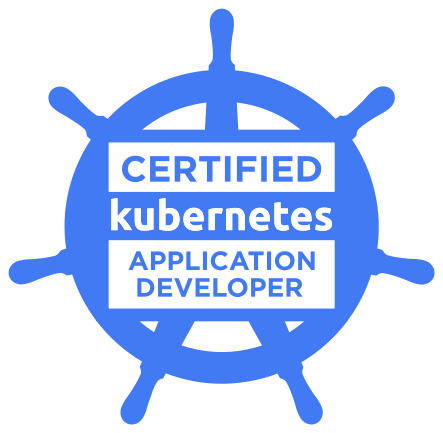

Enmanuel Medina
DevOps Engineer
Cloud Native Santo Domingo
/enmedina3 @en-medina
7 años de experiencia desarrollando aplicaciones cloud native
De Docker a Kubernetes: conceptos clave del mundo cloud native
Universidad Nacional Pedro Henrí Ureña
10:00 AM - 3:00 PM • 2026
Enfocado para estudiantes y profesionales IT
DevOps Engineer
Cloud Native Santo Domingo
/enmedina3 @en-medina
7 años de experiencia desarrollando aplicaciones cloud native
Sigue el evento oficial y regístrate en: ocgroups.dev/cncf/group/cqecyjw/event/um956yb
Introducción a la containerización, imágenes, Docker y Kubernetes.
Espacio de descanso y networking entre participantes y facilitadores.
Laboratorios guiados interactivos para containerizar y desplegar aplicaciones reales.
1 Docker — Contenedores
2 Kubernetes — Orquestacion
3 Objetos — Pods, Deployments, Services
4 Config — ConfigMaps y Secrets
5 Escalado — HPA
6 Acceso externo — Ingress
6 bloques • ejemplos • Q&A al final

1
Empaquetando aplicaciones de forma portable
docker compose upInterview Tip
"Cual es la diferencia entre VM y container?"

La diferencia clave: VMs virtualizan HARDWARE (GB), Contenedores virtualizan el OS (MB)
Interview Tip
"Cuál es la diferencia entre VMs y contenedores?"

Fuente: docs.docker.com (Apache 2.0)
Docker CLI — build, run, ps
Daemon (dockerd) — REST API + gestión
containerd — ciclo de vida (CNCF, 2016)
shim + runC — OCI Runtime Spec
2013: LXC → 2014: libcontainer → 2016: containerd
Cada container ve su propio "mundo"
PID — Procesos propios
Network — Red propia
Mount — Filesystem propio
UTS — Hostname propio
IPC — Memoria compartida
User — Usuarios propios
Limitamos cuánto puede usar cada container
Sin cgroups, un container podría devorar todos los recursos del host
Interview Tip
"Qué feature del kernel Linux aísla y limita los containers?"
Imagen = la receta
Contenedor = el lunchbox
Imagen = clase • Contenedor = instancia

Interview Tip
"Cual es la diferencia entre imagen y contenedor?"
nginx, postgres, python, redisdocker pull descarga una imagendocker push sube tu imagen
# Descargar imagen oficial
docker pull python:3.12-slim
# Ver imagenes locales
docker images
# Subir tu imagen
docker tag mi-app usuario/mi-app:v1
docker push usuario/mi-app:v1
FROM python:3.12-slim # Imagen base
WORKDIR /app # Directorio de trabajo
COPY requirements.txt . # Copiar dependencias
RUN pip install -r requirements.txt # Instalar
COPY . . # Copiar codigo fuente
EXPOSE 8000 # Puerto expuesto
HEALTHCHECK CMD curl -f http://localhost:8000/health || exit 1
CMD ["uvicorn", "main:app", "--host", "0.0.0.0", "--port", "8000"]
docker build -t mi-app:v1 . && docker run -p 8000:8000 mi-app:v1
Interview Tip
"Cual es la diferencia entre CMD y ENTRYPOINT?"
Cada instrucción del Dockerfile = 1 layer
# Ver los layers de una imagen
docker image history ubuntu

ADD o COPY que cambien.dockerignore para excluir archivos innecesariosCOPY de código al final Orden óptimo: FROM → RUN apt-get → COPY requirements.txt → RUN pip install → COPY código → CMD
Interview Tip
"Por qué tu build de Docker está lento?"
# ===== Build stage: instala todas las dependencias =====
FROM python:3.12-slim AS builder
WORKDIR /app
COPY requirements.txt .
RUN pip install --no-cache-dir -r requirements.txt
COPY . .
# ===== Production stage: solo runtime =====
FROM python:3.12-slim
WORKDIR /app
# Copia SOLO lo necesario para correr
COPY --from=builder /usr/local/lib/python3.12/site-packages ./site-packages/
COPY --from=builder /app ./app/
EXPOSE 8000
CMD ["uvicorn", "app.main:app", "--host", "0.0.0.0", "--port", "8000"]
fastapi uvicorn[standard] pydantic
SIN multi-stage
~900 MB
python:3.12 + pip + dev libs
CON multi-stage
~180 MB
solo runtime + deps prod
Multi-stage copia SOLO el runtime de Python + dependencias de producción — descarta pip, dev libs y archivos innecesarios
Interview Tip
"Cómo optimizas el tamaño de una imagen Docker en producción?"
# Construir imagen desde un Dockerfile
docker build -t mi-app:v1 .
# Ejecutar un contenedor
docker run -d --name api -p 8000:8000 mi-app:v1
# Ver contenedores corriendo
docker ps
# Ver logs del contenedor
docker logs api
# Entrar a un contenedor en vivo
docker exec -it api bash
# Parar y limpiar
docker stop api && docker rm api
Estos 5 comandos son el 80% del uso diario de Docker
docker compose up -d y listo
services:
app:
build: .
ports: ["8000:8000"]
depends_on:
db: { condition: service_healthy }
db:
image: postgres:16
environment:
POSTGRES_PASSWORD: secret
healthcheck:
test: ["CMD", "pg_isready"]
redis:
image: redis:7-alpine
Piensa 30 segundos • Comenta con tu companero
2
Orquestacion de contenedores a escala
Sistema interno de Google para gestionar miles de millones de contenedores semanalmente.
Google libera Kubernetes, aplicando más de una década de experiencia real con Borg.
Llega la primera versión estable y se funda la CNCF para garantizar una gobernanza neutral.
Flujo interactivo de comunicación entre los componentes del Control Plane y los Worker Nodes:
kubectl.
containerd o CRI-O).
3
Pods, Deployments, Services
Analogia: roommates compartiendo apartamento
apiVersion: v1
kind: Pod
metadata: { name: mi-app }
spec:
containers:
- { name: app, image: mi-app:v1 }
- { name: logger, image: logger:v1 }

Interview Tip
"Diferencia entre Pod, Deployment y StatefulSet?"
Analogia: un gerente que contrata/despide
3 replicas Auto-healing Rolling Update
apiVersion: apps/v1
kind: Deployment
metadata:
name: mi-app
spec:
replicas: 3
selector:
matchLabels:
app: mi-app
strategy:
type: RollingUpdate
template:
metadata:
labels:
app: mi-app
spec:
containers:
- name: app
image: mi-app:v2
4
Analogia: el recepcionista del hotel
apiVersion: v1
kind: Service
metadata: { name: mi-app }
spec:
selector: { app: mi-app }
ports: [{port: 80, targetPort: 8000}]

Interview Tip
"Diferencia entre Service, Ingress y NodePort?"
ConfigMap
Configuracion no sensible
data:
DB_HOST: "postgres.default"
LOG_LEVEL: "info"
CACHE_TTL: "300"
Misma imagen, diferentes configs para dev/prod
Secret
Datos sensibles (base64)
type: Opaque
data:
DB_PASS: c3VwZXJzZWNyZXQ=
stringData:
API_KEY: "live-key-123"
base64 NO es encriptacion. Habilitar encryption at rest.
Interview Tip
"Cual es la diferencia entre ConfigMap y Secret?"
# Desplegar una app
kubectl apply -f deployment.yaml
# Ver pods corriendo
kubectl get pods
# Informacion detallada de un pod
kubectl describe pod mi-app-abc123
# Ver logs de un pod
kubectl logs mi-app-abc123
# Escalar replicas en vivo
kubectl scale deployment mi-app --replicas=5
# Ejecutar comando dentro de un pod
kubectl exec -it mi-app-abc123 -- bash
Igual que Docker: estos 5 comandos son el 80% del uso diario
Interview Tip
"Si un Pod no schedula, como debugueas?"
5
Analogia: cajas en un supermercado
Si CPU > 70% → mas pods • Si baja → menos pods
apiVersion: autoscaling/v2
kind: HorizontalPodAutoscaler
metadata:
name: mi-app-hpa
spec:
scaleTargetRef:
kind: Deployment
name: mi-app
minReplicas: 2
maxReplicas: 10
metrics:
- type: Resource
resource:
name: cpu
target:
type: Utilization
averageUtilization: 70
6
Como el mundo llega a tu app
Analogía: el portero del edificio, pero con roles separados
# 1. Infra team crea el Gateway (la puerta fisica)
apiVersion: gateway.networking.k8s.io/v1
kind: Gateway
metadata: { name: mi-gateway }
spec:
gatewayClassName: cilium
listeners:
- { name: http, port: 80, protocol: HTTP }
---
# 2. App team define SU routing
apiVersion: gateway.networking.k8s.io/v1
kind: HTTPRoute
metadata: { name: api-route }
spec:
parentRefs: [{ name: mi-gateway }]
hostnames: ["miapp.com"]
rules:
- matches: [{ path: { type: PathPrefix, value: /api }}]
backendRefs: [{ name: api-svc, port: 80 }]
- matches: [{ path: { type: PathPrefix, value: /web }}]
backendRefs: [{ name: web-svc, port: 80 }]
Mismo caso que Ingress, pero infra y apps se mueven en recursos separados
Interview Tip
"Qué es Gateway API y por qué reemplaza a Ingress?"
1 Docker — Imagenes y contenedores
2 Compose — Multi-container local
3 Kubernetes — Pods, Deployments, Services
4 Config — ConfigMaps, Secrets
5 Scaling — HPA auto-scaling
6 Acceso externo — Ingress
kubectl get pods -A
NAMESPACE NAME READY
default mi-app-x2k5 1/1
default mi-app-m8n3 1/1
default mi-app-p4q7 1/1
default postgres-0 1/1
default redis-master-0 1/1
Automatiza CI/CD, infraestructura como codigo
Garantiza que los sistemas no se caigan
Plataformas internas para developers
Kubernetes es la skill #1 en cloud native




¿Preguntas? / Q&A
S notas de orador
O vista general